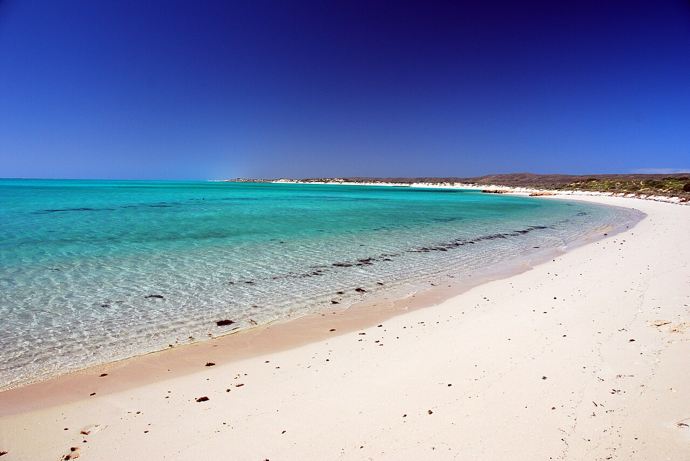

Exmouth and Ningaloo · 5-day family itinerary
Five days based in Exmouth, flying in and out of Learmonth, for a ten-year-old and a seven-year-old. The park pass is sorted before the first drive, the walks happen early, and nobody gets in the water until the family knows where the current runs and where they will get out.

Photo: Robert Young, Turquoise Bay Bundera, CC BY 2.0, via Wikimedia Commons.

Checked before you commit
This illustrative route flies into Learmonth Airport, about 36 km south of Exmouth, stays in Exmouth and flies home from the same airport. Parks and Wildlife Service (DBCA) pages for Cape Range National Park and Ningaloo Marine Park (Turquoise Bay, Milyering Discovery Centre, Lakeside, Oyster Stacks, Mandu Mandu Gorge, Yardie Creek, Charles Knife Canyon, Mangrove Bay, Osprey Bay, Bundegi, Jurabi Turtle Centre, fees and passes, swimming, snorkelling, beach, bushwalking and remote-travel safety, and when to go) and the Shire of Exmouth’s Learmonth Airport page were read on 13 November 2026. Nothing was booked.
One base and one airport. The Shire of Exmouth puts Learmonth Airport about 36 km south of town and says bookings are essential for transfers, taxis and hire cars, because operators don’t always meet each flight. This plan uses a hire car. DBCA puts Milyering Discovery Centre, the park’s visitor centre, 54 km from Exmouth. It gives no drive times to the west-coast beaches, and we didn’t measure them.
One anchor each morning and a quieter afternoon. The longest walk is Mandu Mandu Gorge, a 3 km return Class 4 trail with a steep section, done early. DBCA says walks in Cape Range should only be attempted between April and September, and that there is no water and very little shade in the park.
We didn’t check flights, the hire car, accommodation, tide times or any tour, including whale shark swims and the Yardie Creek boat. The A$17 day entry fee is what DBCA showed on 13 November 2026. A booking-hub link is intent only. It doesn’t hold a room, a car or a seat on a boat.
Planning boundary: dates are illustrative; the worked example runs Monday 21 to Friday 25 June 2027, five days counted from the flight in to the flight home. DBCA says summer temperatures in Cape Range can soar to over 45 °C, which is why this plan sits in June, inside its April to September walking window.
DBCA says rangers don’t regularly patrol the beaches at Turquoise Bay, and that beaches in parks and reserves are almost all unpatrolled. On 13 November 2026 its Cape Range page listed cyclone damage closing campgrounds further south, at Warroora and Nyinggulara; none is on this route. Alfred doesn’t check park alerts, tides or sea conditions. A booking-hub link doesn’t prove a booking.
Route and family-coordination brief
Party: two adults, a ten-year-old and a seven-year-old, Australian residents. Assumption: both children swim confidently in a pool but haven’t snorkelled in an ocean current. Base: Exmouth. Pace: gentle, a morning outing and a quieter afternoon. Assumption: a hire car booked ahead and collected at Learmonth.
Getting there: the Shire of Exmouth says Learmonth Airport is served by Qantas, that hire car booths are staffed around scheduled arrivals, and that hire rates carry a surcharge because of the airport’s distance from town. We assume a connection through Perth; we didn’t check routes, flights, fares or the drive time into Exmouth.
Park pass rule: Cape Range National Park charges an entry fee, A$17 a day for a standard vehicle, while entry to Ningaloo Marine Park is free. DBCA also sells 5-day, 14-day and 4-week Holiday Passes online. You print the pass and display it in the car, it can’t be returned, and DBCA’s shop says to enter “HIRE VEHICLE” if you don’t yet know the hire car’s registration. We didn’t confirm the 5-day price, so compare it with three day fees before you buy.
Current and exit rule: at Turquoise Bay, DBCA says the best snorkelling is off the Bay Loop car park, well away from the potentially strong currents at the sandy point, and that inexperienced swimmers shouldn’t swim or snorkel in strong currents. Before anyone gets in, watch the water from the beach, read the sign at the entry point and agree where you will get out. DBCA says never snorkel alone, and to use a flotation device if you aren’t a confident swimmer.
Water and signal rule: DBCA says to carry at least 4 litres of water per person for walks such as Mandu Mandu, and that mobile reception isn’t available in most remote areas. It suggests a personal locator beacon (PLB) and the free Emergency+ app, which gives your GPS location even without coverage. Milyering has a public phone and Telstra reception. Leave your route and return time with someone.
Left out: the Turquoise Bay drift snorkel as a default (it is a Day 4 option only, with conditions); Oyster Stacks unless the tide is at least 1.2 m, DBCA’s minimum; the Class 4 Yardie Gorge Trail and Badjirrajirra walk; Shothole Canyon’s unsealed road; the kayak trails; whale shark and other boat tours, which we didn’t check; and camping.
Day 1 — Fly into Learmonth, sort the pass, stock the water
Fly into Learmonth Airport and collect the hire car you booked; the Shire of Exmouth says operators may not meet a flight without a booking. The airport is about 36 km south of Exmouth. We haven’t checked flight times, so the day stays open until you land.
In Exmouth, buy food and plenty of water for the next four days. DBCA says there is no water in Cape Range National Park and suggests at least 4 litres per person for a walk like Mandu Mandu. If you bought a Holiday Pass, print it and put it on the dashboard tonight.
If there is energy left, drive about 20 km along Yardie Creek Road to the Jurabi Turtle Centre; DBCA says to allow 20 minutes. It is open all year with no entry fee. Its guided turtle tours run from December to March, so in June it is the displays only. Bins aren’t provided, so take rubbish back with you.
Fallback: if the flight lands late, skip Jurabi and keep it for a windy afternoon later in the week.
Live-check: your flight time; the hire car pick-up; DBCA park alerts.
Day 2 — Milyering first, then the Bay Loop
Drive to Milyering Discovery Centre, 54 km from Exmouth, which DBCA lists as open daily from 9 am to 3:45 pm. Watch the Safe Snorkelling video, ask about the day’s currents and tide, and hire snorkel gear here if you haven’t brought your own. Pay the park entry fee if you don’t have a pass.
Turquoise Bay, from the Bay Loop car park. DBCA says the northern half of the bay has the best snorkelling, well away from the potentially strong currents at the sandy point to the south. Watch the water from the beach first, read the sign at the entry point, and show the children where everyone will get out. It is a sanctuary zone: look, but don’t take.
Lunch in the shade you bring, then a quiet afternoon back in Exmouth; DBCA says there is very little shade in the park. Turquoise Bay has toilets.
Fallback: if the current is running or the swell is up, DBCA suggests staying on the beach or swimming well inside the bay; or spend longer with the displays at Milyering.
Live-check: park alerts; the sign at the entry point; Milyering’s hours on the day.
Day 3 — Mandu Mandu early, Lakeside if it is calm
Mandu Mandu Gorge, a Class 4 trail, 3 km return, along a rocky creek bed and up a steep path onto the gorge rim. DBCA says it is best experienced in the early morning or late afternoon. Carry 4 litres of water each, hats and sturdy shoes; there are no toilets. Watch for black-flanked rock-wallabies, and keep the children well back from cliff edges.
Lakeside. Walk 500 m south along the beach to the sanctuary marker, then snorkel between the beach and the two yellow buoys, which gives the children a boundary they can see. DBCA warns that Lakeside can have strong currents too, so assess the water before anyone goes in.
If the family still has energy, stop at the Mangrove Bay bird hide, 100 m from the car park along a boardwalk. Walk quietly to see the birds, and cover up against mosquitoes if you stay towards dusk.
Fallback: if Mandu Mandu feels too steep for the seven-year-old, turn back along the creek bed. If Lakeside is choppy, sit on the sand at Osprey Bay or walk its accessible trail north to Sandy Bay.
Live-check: park alerts; the water each person is carrying; the tide, if you want to try Oyster Stacks instead.
Day 4 — Yardie Creek, and the drift only if it is right
Drive south to Yardie Creek. The Yardie Nature Walk is 1.2 km return, Class 1, and DBCA says to allow 40 minutes; it follows the northern side of the gorge above the red cliffs, with views of the creek mouth and the reef. Picnic at the tables under the tamarisk trees. DBCA mentions a boat tour up the gorge; we didn’t check it.
Back to Turquoise Bay. The drift snorkel is an option, not the plan. DBCA says to walk about 200 m south from the Drift Loop track, enter at the southern end of the beach and let a south-to-north current carry you over the reef, and that currents can be strong at the northern end of the drift. Go only if the water looks right from the beach, an adult swims with each child, and everyone knows where to get out before the sandy point. Otherwise, repeat the Bay Loop.
Fallback: DBCA says inexperienced swimmers who can’t find an experienced person to go with them should use a licensed tour operator. Or stay on the sand; that is a good end to the day too.
Live-check: the sign at the entry point; the current, asked at Milyering; park alerts.
Day 5 — A short last morning and the flight home
Stay close to town. DBCA calls Bundegi Beach a short drive from Exmouth; it has toilets, and DBCA says its reef sites are best snorkelled at high tide because they can be shallow. Treat it as a swim-and-sand morning unless the tide suits.
Or, if your hire car terms allow gravel roads, drive up Charles Knife Canyon. DBCA says the turn-off is 22 km, about 20 minutes, south of Exmouth, and that the road winds to the top of the range with views over Exmouth Gulf. It recommends four-wheel drive on the gravel section. There are no toilets, and no park entry fee.
Return the car at Learmonth. The Shire says airlines want you at check-in no later than 60 minutes before departure.
Fallback: if the flight leaves early, drive straight from Exmouth to the airport.
Live-check: your flight time; the car return time; the hire car’s rules on gravel roads.
Planning notes
Related travel note: A drift snorkel starts at the exit.
Dates are illustrative. At decision time, recheck DBCA park alerts, the park entry fee and Holiday Pass price, Milyering’s hours, the tide times for any Oyster Stacks or Bundegi plan, the marine forecast, your flights into Learmonth, the car-hire pick-up and return, and your accommodation booking.
Oyster Stacks. DBCA says the Oyster Stacks should only be snorkelled at high tide, at least 1.2 m, and to check tide heights and times at Milyering. It warns of strong currents and swell, and of sharp, slippery rocks on the shore, so wear reef shoes. If the tide lines up on Day 3 and the water is calm, it can replace Lakeside; otherwise look from the lookout.
What we couldn’t confirm. DBCA’s park alerts page loads its alerts in a way we couldn’t read, so check it yourself. DBCA gives few drive times, so only its 20-minute figures for Jurabi and the Charles Knife turn-off appear here. Its pages disagree on seasons: humpback whales May to October, June to November or August to December, and whale sharks March to August or March to July, depending on the page.
A whale shark option. DBCA’s Ningaloo Marine Park page suggests a guided experience for whale sharks, humpbacks and manta rays. Late June falls inside the whale shark season on both of DBCA’s versions of it, but we didn’t check any operator, price, age or swimming rule, or availability, so no tour is in this plan.
In Alfred, while the trip is still Planning, you can keep or change the hotel and then the flights Alfred picked, and browse the activity and meal carousels. Their Like toggles aren’t saved, so a like isn’t a record of a decision. We did not test whether city search offers Exmouth, or whether Alfred plans flights into Learmonth.
Plan a trip
Start with your people, dates and pace, then review the editable plan before booking.
Plan a trip